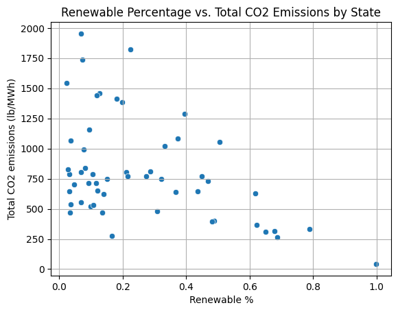
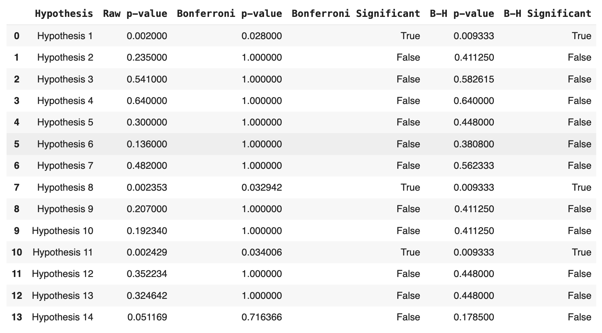
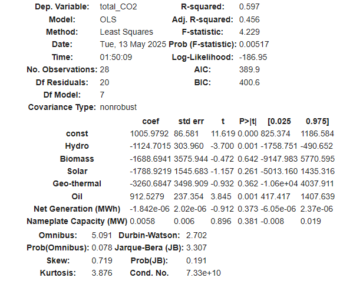

U.S. Renewable Energy & Emissions Analysis
Executive Summary
Using Python, I analyzed one year of EPA eGRID data on U.S. states and 28 grid subregions to test whether more renewable energy goes with lower emissions. I tested 14 hypotheses with two multiple-testing corrections, then fit an OLS regression of subregion CO₂ on fuel mix. I conclude that:
- States with 30% or more renewable energy have about 22% lower CO₂ emissions than states below that threshold. Top-quartile renewable states also emit about 19% less methane and about 14% less annual NOₓ. All three held up after both corrections.
- Hydro is the only renewable source with a significant link to lower subregion CO₂ (coefficient −1,125, p = 0.001), while oil goes with higher CO₂ (+913, p = 0.001). The effects of solar, biomass and geothermal were inconclusive.
Significance of This Project
Whether renewables actually cut emissions shapes how states set targets such as Renewable Portfolio Standards, and where they invest. Using EPA data, do states and regions with more renewable energy emit less, which sources carry the effect, and how confident can we be that the relationship is causal?
Methodology
- Explore the eGRID data Cleaned the state and subregion resource-mix and emissions tables, then plotted renewable share against CO₂, capacity against generation, renewable groups by region, and subregions ranked by CO₂.
- Test 14 hypotheses Ran two-sample t-tests (unequal variance), for example 30% or more renewable vs. below, gas-heavy states, West vs. South, and top vs. bottom quartile for each pollutant. The power for the first hypothesis was 0.88.
- Correct for multiple testing Applied Bonferroni and Benjamini-Hochberg corrections. I preferred Benjamini-Hochberg because the goal was finding patterns, not making a high-stakes decision. Both methods agreed on all 14 hypotheses.
- Estimate effects with OLS Regressed total CO₂ on hydro, biomass, solar, geothermal and oil shares, controlling for net generation and nameplate capacity. A DAG helped me reason about unobserved confounders such as policy, demand and fuel prices.
Skills
Python: Pandas and NumPy to clean and merge the eGRID tables, Statsmodels to fit the OLS regression
Visualization: Matplotlib and Seaborn for scatter and bar plots
Statistics: Two-sample t-tests with a power calculation, Bonferroni and Benjamini-Hochberg corrections, OLS regression, confounder reasoning with a DAG
Results & Business Recommendation
Only 3 of 14 hypotheses held up after correction. States with 30% or more renewables have lower CO₂ emissions (raw p = 0.002, Benjamini-Hochberg p = 0.009), and top-quartile renewable states have lower methane and annual NOₓ. The other 11, including SO₂, ozone-season NOₓ, gas-heavy states and West vs. South, were not significant after correction. In the OLS regression (R² = 0.597, 28 subregions), hydro was the only renewable with a significant negative coefficient (−1,125, p = 0.001), and oil was associated with higher emissions (+913, p = 0.001). Solar, biomass and geothermal had negative signs but standard errors too large to draw a conclusion.
Renewable share vs. total CO₂ emissions by state (lb/MWh).

Hypothesis test results: raw, Bonferroni and Benjamini-Hochberg p-values.

OLS regression output: total CO₂ on fuel-mix shares (N = 28).

Because the renewable-heavy pattern held after correction, but the regression rests on only 28 subregions, I read this as a strong association rather than proof of causation. I offer the following insights:
- Renewable-heavy states emit less CO₂, which supports raising renewable targets. The clearest difference appears at the 30% mark.
- Hydro carries the clearest effect. The other renewables are inconclusive in this sample, which doesn't mean they don't work.
- Policy, demand and fuel prices weren't observed, so confidence in a causal reading is low.
States should raise their Renewable Portfolio Standards to at least 35% by 2030, paired with incentives for energy storage and grid interconnection. Policymakers should also expand hydropower where environmentally feasible, with rural and Indigenous communities included in planning.
Next Steps
- Build a five-year hourly panel by balancing authority (about 44 million observations) to test whether the annual trend holds at the dispatch level.
- Add policy, demand and fuel-price controls, and move to county or utility granularity.
- Test interactions between energy sources, treat renewable share as continuous, and check how sensitive the results are to the 30% and quartile cutoffs.
- Ask grid operators how often renewables are curtailed or backed up by gas during demand peaks.
Read the Written Report (PDF) View Notebook on GitHub
← Back to all projects